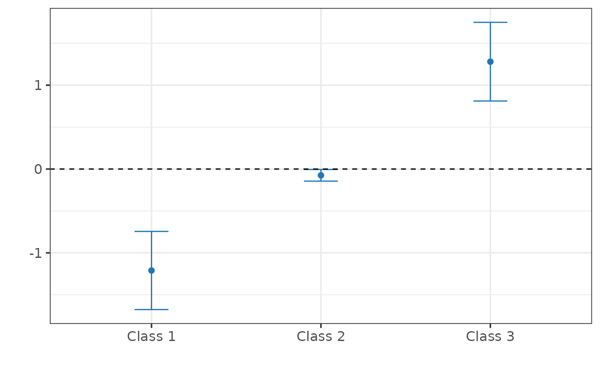

Causal Inference for Qualitative Outcomes under Regression Discontinuity
causalQual_rd.RdFit local polynomial regression models for qualitative outcomes to estimate the probabilities of shift at the cutoff.
Details
Under a regression discontinuity design, identification requires that the probability mass functions for class \(m\) of potential outcomes are continuous in the running variable (continuity). If this assumption holds, we can recover the probability shift at the cutoff for class \(m\):
$$\delta_{m, C} := P(Y_i (1) = m | Running_i = cutoff) - P(Y_i(0) = m | Running_i = cutoff).$$
causalQual_rd applies, for each class \(m\), standard local polynomial estimators to the binary variable \(1(Y_i = m)\). Specifically, the ruotine implements the
robust bias-corrected inference procedure of Calonico et al. (2014) (see the rdrobust function).
Examples
## Generate synthetic data.
set.seed(1986)
data <- generate_qualitative_data_rd(1000, outcome_type = "ordered")
Y <- data$Y
running_variable <- data$running_variable
cutoff <- data$cutoff
## Estimate probabilities of shift at the cutoff.
fit <- causalQual_rd(Y, running_variable, cutoff)
summary(fit)
#>
#> ── CAUSAL INFERENCE WITH QUALITATIVE OUTCOMES ──────────────────────────────────
#>
#> ── Research design ──
#>
#> Identification: Regression Discontinuity
#> Estimand: Probability Shifts at the Cutoff
#> Outcome type:
#> Classes: 1 2 3
#> N. units: 0
#> Warning: argument is not numeric or logical: returning NA
#> Fraction treated units: NA
#>
#> ── Point estimates and 95\% confidence intervals ──
#>
#> Class 1: -0.840 [-1.051, -0.628]
#> Class 2: -0.006 [-0.193, 0.181]
#> Class 3: 0.981 [ 0.737, 1.226]
plot(fit)
